The DICTOnary · the known shapes
Known and rediscovered shapes in the work
The 37 shapes the work builds with that were made first by others, or rediscovered by DICTO and found in the sources checked: known shapes DICTO named, rediscovered or used as named connectors; other classical building blocks are cited where they are used. Numbers and pictures as set out in “How to read an entry”.
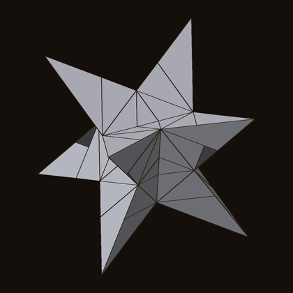
Hart 1996, tetrahedral stellations of the dodecahedron, no. 8 Dogstar*
solid · #42
Volume I, Chapter 2
G. W. Hart 1996, stellation 8 of the dodecahedron; its Vacuus (DICTO's reading): 114 of its 138 edges lie on the 15 mirror planes of the icosahedral group, with no central disc (The Platonic Solids, Chapter 4)
* Dodecahedron stellation 8 (Hart, 1996). Rediscovered by DICTO as the Dogstar.

Mosseri–Sadoc t6 (scaled by 1/φ) AXE*
piece · #19
Volume I, Chapter 1
Mosseri–Sadoc tile: a tetrahedron, five edges 1 and one 1/φ
* Mosseri–Sadoc tile t6, scaled by 1/φ (Mosseri and Sadoc, 1982). Rediscovered by DICTO as AXE.

Mosseri–Sadoc t4 (scaled by 1/φ) CLEO*
piece · #19
Volume I, Chapter 1
Mosseri–Sadoc tile: a triangular pyramid, base 1/φ, side edges 1
* Mosseri–Sadoc tile t4, scaled by 1/φ (Mosseri and Sadoc, 1982). Rediscovered by DICTO as CLEO.
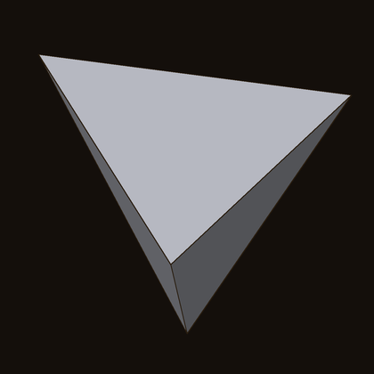
— Cleo-Icos*
piece · #29
Volume I, Chapter 3
the icosahedron's central face pyramid (classical shape; the name is DICTO's); appears in #43 as the OTT's octahedral ray, there called Oktaktis (DICTO DOI: 10.5281/zenodo.23532013)
* The icosahedron face pyramid (classical; Mackay, 1962). Rediscovered by DICTO as the Cleo-Icos.
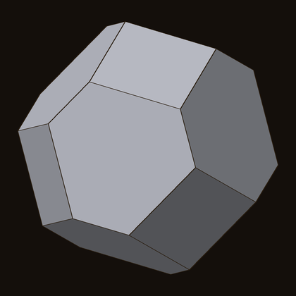
— Icosaxes*
solid · #48
Volume I, Chapter 2
known shape: Koca et al. 2015 non-regular truncated octahedron x = φ (semi-uniform truncated octahedron); new route (the golden split of the AXE** in the icosahedron lattice, #48); the name is DICTO's; families (#88): DICTO-Kepler golden truncations (the octahedron's greater golden cut, x = 1/φ²) and DICTO-GTT-Solids
* The truncated octahedron x = φ (Koca et al., 2015). DICTO's name: Icosaxes. ** Mosseri–Sadoc tile t6, scaled by 1/φ (Mosseri and Sadoc, 1982). Rediscovered by DICTO as AXE.

— Unborn Axes*
solid · #48
Volume I, Chapter 2
known shape: Koca et al. 2015 non-regular truncated octahedron x = 1/φ; new route (#48); the name is DICTO's; families (#88): DICTO-Kepler golden truncations (the octahedron's lesser golden cut, x = 1/(φ√5)) and DICTO-GTT-Solids
* The truncated octahedron x = 1/φ (Koca et al., 2015). DICTO's name: Unborn Axes.
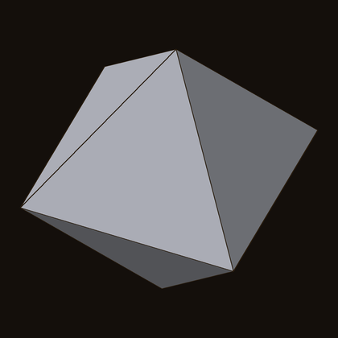
U5; W2 regular octahedron at the Delian bond* (classical)
solid · #51
Volume I, Chapter 2
known shape (regular octahedron), of edge 2−1/3 at octet edge 1 (octet truss: Fuller, 1961); DICTO's name for it at the Delian bond (#51)
* Named Delilah in DICTO's books.
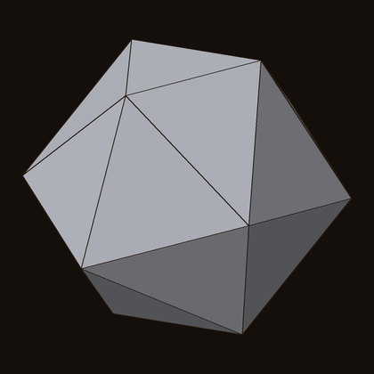
— convex hull of Jessen's orthogonal icosahedron* (Jessen, 1967)
solid · #55
Volume I, Chapter 2
known shape: the classical Z12 coordination icosahedron of A15 (Frank and Kasper 1958), the convex hull of Jessen's orthogonal icosahedron (Jessen 1967) scaled by 1/2; here the A15 power cell at weight difference 3/4 (#55: the tiling is the classical picture of A15 shifted by half a body diagonal); the name is DICTO's
* Named Goliath in DICTO's books.
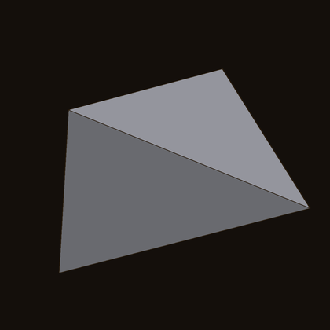
— tetragonal disphenoid* (classical)
solid · #55
Volume I, Chapter 2
known shape: a tetragonal disphenoid, the empty Cr4 tetrahedron of A15 moved by half a body diagonal (#55 Corollary 1); the name is DICTO's
* Named David in DICTO's books.
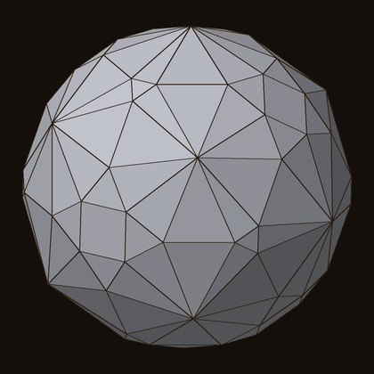
— Alicia*
solid · #63
Volume I, Chapter 6
The central section of her cell-first series: 84 corners, 240 edges, 158 faces (152 triangles, 6 four-sided). Shape first found by Alicia Boole Stott (1900), by construction, drawn as a plan and built as a card model; its exact geometry (coordinates, volume, symmetry, checked) computed by DICTO in #63 (slice 48 of its atlas). Named after her by DICTO.
* The cell-first section of the 600-cell at height 0 (Boole Stott, 1900). Rediscovered by DICTO as Alicia.

— Unicorn*
solid · #63
Volume I, Chapter 6
42 corners, 120 edges, 80 triangles. Shape first found by Alicia Boole Stott (1900), by construction, drawn as a plan and built as a card model; its exact geometry (coordinates, volume, symmetry, checked) computed by DICTO in #63 (slice 58 of its atlas).
* The cell-first section of the 600-cell at height (3 + √5)/2 (Boole Stott, 1900). Rediscovered by DICTO as Unicorn.
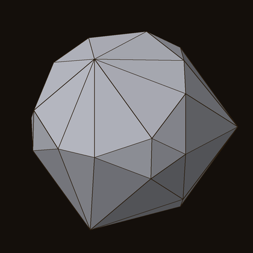
— Bandersnatch*
solid · #63
Volume I, Chapter 6
28 corners, 78 edges, 52 triangles. Shape first found by Alicia Boole Stott (1900), by construction, drawn as a plan and built as a card model; its exact geometry (coordinates, volume, symmetry, checked) computed by DICTO in #63 (slice 60 of its atlas).
* The cell-first section of the 600-cell at height (5 + 3√5)/4 (Boole Stott, 1900). Rediscovered by DICTO as Bandersnatch.

— Greater Golden Cut Icosidodecahedron*
solid · #89
Volume I, Chapters 2 and 6
DICTO Golden-Regular Cut, found by DICTO independently: Zefiro 2011's regular-hexagon stage of the icosidodecahedron, cut at x = 1/3; read as golden in #89 (the pentagons golden decagons, the triangles regular hexagons; 30 rectangles, 120 corners, Ih); DICTO's name
* Zefiro's regular-hexagon stage of the icosidodecahedron (Zefiro, 2011). Rediscovered by DICTO as the Greater Golden Cut Icosidodecahedron.
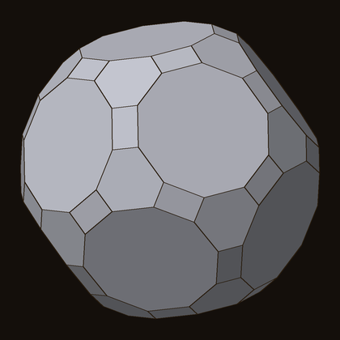
— Lesser Golden Cut Icosidodecahedron*
solid · #89
Volume I, Chapters 2 and 6
DICTO Golden-Regular Cut, found by DICTO independently: Zefiro 2011's regular-decagon stage of the icosidodecahedron, cut at x = 1/(φ√5); read as golden in #89 (the triangles golden truncated triangles, the pentagons regular decagons; 30 rectangles, 120 corners, Ih); DICTO's name; also a DICTO-GTT-Solid (#89); not White Knight (same faces, the long and short sides swapped)
* Zefiro's regular-decagon stage of the icosidodecahedron (Zefiro, 2011). Rediscovered by DICTO as the Lesser Golden Cut Icosidodecahedron.
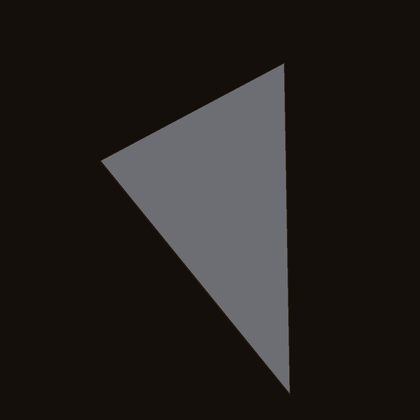
Mosseri–Sadoc t3 (half size) Cleo-low*
piece · #27
Volume I, Chapter 3
Mosseri–Sadoc tile: a triangular pyramid, here at half size, base φ/2, side edges 1/2; a piece of the Dharma shell (#27)
* Mosseri–Sadoc tile t3, at half size (Mosseri and Sadoc, 1982). DICTO's name: Cleo-low. Tricap (#48) is the same shape at another scale.
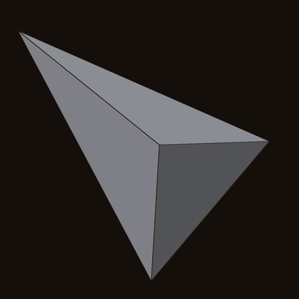
Mosseri–Sadoc t2 Hound Tooth*
piece · #77
Volume I, Chapter 2
Mosseri–Sadoc tile: a tetrahedron (#77)
* Mosseri–Sadoc tile t2 (Mosseri and Sadoc, 1982). DICTO's name: Hound Tooth.
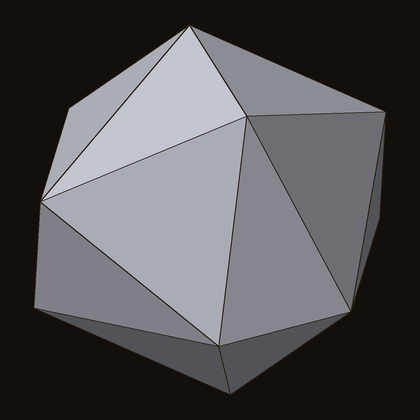
— Unborn*
solid · #48
Volume I, Chapter 2
the void dodecahedron of the icosahedral octet minus its 8 Tricaps**: 12 corners, 20 triangles, Th, volume (3 + 7√5)/12; with its mirror image it makes the Unborn Axes*** (#48)
* The pseudoicosahedron (Koca et al., 2015). DICTO's name: Unborn. ** Mosseri–Sadoc tile t3, scaled by 1/φ (Mosseri and Sadoc, 1982). DICTO's name: Tricap. *** The truncated octahedron x = 1/φ (Koca et al., 2015). DICTO's name: Unborn Axes.

Wenninger 28 Inner Eye*
solid · #19
Volume I, Chapter 1
a stellation of the icosahedron (Wenninger 1971, model 28): the icosahedron of edge 1/φ with 30 AXE** and 20 CLEO***, the dodecahedron with its 12 pentagonal caps J2 removed; 32 corners, 60 triangles (#19)
* The excavated dodecahedron (Coxeter, Du Val, Flather and Petrie, 1938). DICTO's name: Inner Eye. ** Mosseri–Sadoc tile t6, scaled by 1/φ (Mosseri and Sadoc, 1982). Rediscovered by DICTO as AXE. *** Mosseri–Sadoc tile t4, scaled by 1/φ (Mosseri and Sadoc, 1982). Rediscovered by DICTO as CLEO.

— cut OG*
solid · #95
not in Volume I
the hull of the OG's 90 sphere corners, the edge midpoints of a regular truncated icosahedron: 12 pentagons, 20 hexagons, 60 triangles, Ih; its relation to the OG is new in the sources checked; its kits are listed with the clusters (#95)
* The rectified truncated icosahedron (classical; near-miss Johnson solid, McCooey). Rediscovered by DICTO as the cut OG.
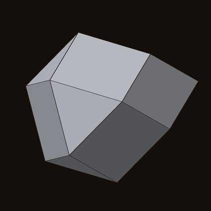
— augmented cuboctahedron* (Stewart, 1970)
solid · The Permutohedron Paradigm
not in Volume I
a cuboctahedron with a square pyramid on one square, whose triangles lie flat with their neighbours as four 60° rhombi: 13 corners, 4 triangles, 4 rhombi and 5 squares, 24 equal edges (The Permutohedron Paradigm, Chapter 14); its Vacuus (DICTO's reading): 24 fins and 13 struts, its corner centroid inside all 13 face planes (The Permutohedron Paradigm, Chapter 14; floating point)
* DICTO's name: DICTO 13-COA (13-Corner Octet Atom).
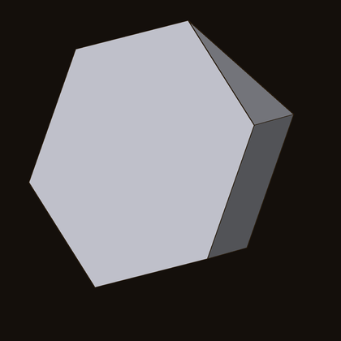
— half rhombic dodecahedron* (classical)
piece · The Permutohedron Paradigm
not in Volume I
half the rhombic dodecahedron as built in Polyhedraverse: 10 corners, 1 hexagon, 5 four-sided faces and 2 triangles; fourteen close into the chamfered cube, and with cube pyramids it fills space (The Permutohedron Paradigm, Chapter 5)
* DICTO's name: Hemi RD.
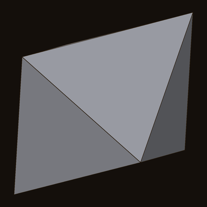
— square bipyramid* (classical)
solid · #62
Volume I, Chapter 6
the 16-cell's edge-first shadow: two cube-centre pyramids glued base to base, dihedral angles 90° and 120°; it fills space alone, the cell of the known square bipyramidal honeycomb (#62)
* DICTO's name: OCT-16.
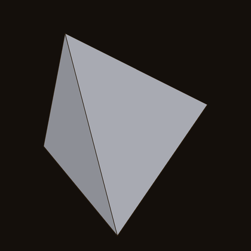
— triangular bipyramid* (classical)
solid · #62
Volume I, Chapter 6
the 5-cell's edge-first shadow, with the pattern of Johnson's J12: three edges √2 and six √(7/6); three copies close round a base edge (dihedral angle 120°) (#62)
* DICTO's name: TBP-5.

— The indented rhombic triacontahedron* (Hall, 2016; Inchbald; Senechal–Taylor, c. 2023)
piece · study 2026-11-17-inchbald-check
not in Volume I
first shown by D. Hall, as the “Dimpled Rhombic Triacontahedron”, in 2016, and described again about 2023 by G. Inchbald, as the “dimpled rhombic triacontahedron”, and, it appears, by M. Senechal and J. E. Taylor (“Parallelohedra, old and new”, Acta Cryst. A 79 (2023) 273–279, not yet read here); Hall is named first because his models are the earliest dated source found, and his solid is this one exactly (study 2026-11-20-hall-2016-check): D. Hall, “Dimpled Rhombic Triacontahedron – Construction”, Sketchfab (28 June 2016), https://sketchfab.com/3d-models/dimpled-rhombic-triacontahedron-construction-9e2be3ccfe7b480c846f4d431441ac19, with lattice models of 29 June and 11 July 2016 (one golden rhombohedron removed at each of four corners with tetrahedral symmetry; chiral; a space-filler); G. Inchbald, “A 3-D Quasicrystal Structure?”, steelpillow.com polyhedra pages (earliest archived copy with it 23 March 2023; not in the copy of 31 March 2022): the rhombic triacontahedron with four alternate cube-corner triplets of faces dimpled, each by an oblate golden rhombohedron; tetrahedral symmetry (its 12 rotations); it tiles space with cubic periodicity (Inchbald), proved exactly as a face-to-face lattice tiling (studies 2026-11-17-inchbald-check and 2026-11-17-get-mixing); 30 golden rhombi, every zone of 10 faces, so it is also a k = 10 example for Grünbaum's (2010) question
| No. | Shape | Kind | From | Told in | Status |
|---|---|---|---|---|---|
| — | DICTO all-rhombus block | piece | finding F1 | Volume I, Findings and apps | a parallelepiped (part of F1); not assessed separately |
| — | DICTO flattened rhombohedron | piece | finding F1 | Volume I, Findings and apps | a rhombohedron (part of F1); not assessed separately |
| — | Bain disphenoid | solid | finding F3 | not in Volume I | Bain 1924 (known result shown in the apps, not DICTO's) |
| — | Bain rhombic dodecahedron | solid | finding F4 | not in Volume I | known (squares + 60° rhombi); not DICTO's |
| — | Regular-hexagon elongated dodecahedron* | solid | finding F5 | Volume I, Findings and apps | found by DICTO independently; Grünbaum 2010 Fig. 2(b) (Fedorov ED) * Fedorov's elongated dodecahedron with regular hexagons (Fedorov, 1885). Rediscovered by DICTO as the regular-hexagon elongated dodecahedron. |
| — | Sunstar Lattice (dodecahedra and Dogstars*) | structure | #42 | Volume I, Chapter 2 | the honeycomb is Hart's (1996) * Dodecahedron stellation 8 (Hart, 1996). Rediscovered by DICTO as the Dogstar. |
| — | DESHI arrangement* | structure | #19 | Volume I, Chapter 1 | Gray 2002 * Gray's cage of twelve icosahedra (Gray, 2002). DICTO's name: DESHI. |
| — | Bodhi seed | structure | #24 | Volume I, Chapter 3 | partly known: Kabai's RT cluster layer; closure, centre, kits not found |
| — | Reuleaux tetrahedron | curved | #45 | Volume I, Chapter 1 | Reuleaux tetrahedron (classical) |
| J1 | Half octahedron P (#47 connector) | piece | #47 | Volume I, Chapter 2 | square pyramid J1 (Johnson, 1966; Zalgaller, 1969), half the regular octahedron |
| — | Tetrahedron face pyramid Q and Q' (#44, #47 connectors) | piece | #47 | Volume I, Chapter 2 | central face pyramid of the tetrahedron |
| — | A · HexOct 3/8 c-tile, brick of two cubes | solid | #86 | not in Volume I | classical: a 1 × 1 × 2 brick of two cubes of edge 1/√2 (#86) |
| — | D · HexOct −11/24 h-tile, regular hexagonal prism | solid | #86 | not in Volume I | classical: the regular hexagonal prism, one of Fedorov's five parallelohedra (1885) (#86) |
References for the names and credits
DICTO's names are used in the text; the * notes give the regular names with their first makers.
- A. Boole Stott, “On certain series of sections of the regular four-dimensional hypersolids”, Verhandelingen der Koninklijke Akademie van Wetenschappen te Amsterdam, Eerste Sectie, 7, no. 3 (1900).
- E. Catalan, Mémoire sur la théorie des polyèdres, Journal de l'École Polytechnique 24, cahier 41 (1865) 1–71.
- J. H. Conway, M. J. T. Guy, Four-dimensional Archimedean polytopes, in: Proceedings of the Colloquium on Convexity, Copenhagen (1965) 38–39.
- H. S. M. Coxeter, P. Du Val, H. T. Flather, J. F. Petrie, The Fifty-Nine Icosahedra, University of Toronto Studies, Mathematical Series 6 (1938).
- H. S. M. Coxeter, Regular Polytopes, Methuen, London (1948); 3rd ed., Dover, New York (1973).
- M. Dutour Sikirić, W. Myrvold, The special cuts of the 600-cell, Beiträge zur Algebra und Geometrie 49(1) (2008) 269–275; arXiv:0708.3443.
- E. L. Elte, The Semiregular Polytopes of the Hyperspaces, Hoitsema, Groningen (1912).
- E. S. Fedorov, Elements of the Study of Figures (Начала учения о фигурах), St Petersburg (1885).
- R. B. Fuller, Synergetic building construction (the octet truss), US Patent 2,986,241 (1961).
- T. Gosset, On the regular and semi-regular figures in space of n dimensions, Messenger of Mathematics 29 (1900) 43–48.
- R. W. Gray, More icosahedron scaling and packing (web, 2002).
- B. Grünbaum, Convex Polytopes, Wiley, London (1967); 2nd ed., Springer (2003).
- B. Grünbaum, The Bilinski dodecahedron and assorted parallelohedra, zonohedra, monohedra, isozonohedra and otherhedra, Mathematical Intelligencer 32 (2010) 5–15.
- G. Th. Guilbaud, P. Rosenstiehl, Analyse algébrique d'un scrutin, Mathématiques et Sciences Humaines 4 (1963) 9–33.
- G. W. Hart, Tetrahedral stellations of the dodecahedron (1996), https://www.georgehart.com/virtual-polyhedra/stellations-dodecahedron-tetrahedral.html (stellation 8).
- B. Jessen, “Orthogonal icosahedra”, Nordisk Matematisk Tidskrift 15 (1967) 90–96.
- N. W. Johnson, Convex polyhedra with regular faces, Canadian Journal of Mathematics 18 (1966) 169–200.
- M. Koca, R. Koç, M. Al-Barwani, S. Al-Farsi, Maximal subgroups of the Coxeter group W(H4) and quaternions, Linear Algebra and its Applications 412 (2006) 441–452.
- M. Koca, N. Ozdes Koca, M. Al-Ajmi, Branching of the W(H4) polytopes and their dual polytopes under the Coxeter groups W(A4) and W(H3) represented by quaternions, Turkish Journal of Physics 36 (2012) 309–333.
- N. O. Koca, M. Koca, A. Al-Mukhaini, A. Al-Qanobi, Quaternionic representations of the pyritohedral group, related polyhedra and lattices (2015), arXiv:1506.04600.
- A. L. Mackay, A dense non-crystallographic packing of equal spheres, Acta Crystallographica 15 (1962) 916–918.
- D. I. McCooey, Visual Polyhedra: Rectified Truncated Icosahedron (web), http://dmccooey.com/polyhedra/.
- M. Möller, Vierdimensionale Archimedische Polytope, Dissertation, Universität Hamburg (2004).
- R. Mosseri, J. F. Sadoc, “Two and three dimensional non-periodic networks obtained from self-similar tiling”, in The Structure of Non-Crystalline Materials, Taylor and Francis, London (1982); reprinted in P. J. Steinhardt, S. Ostlund (eds.), The Physics of Quasicrystals, World Scientific (1987) 720–734.
- L. Schläfli, Theorie der vielfachen Kontinuität (written 1850–1852), Denkschriften der Schweizerischen Naturforschenden Gesellschaft 38 (1901).
- P. H. Schoute, Analytical treatment of the polytopes regularly derived from the regular polytopes, Verhandelingen der Koninklijke Akademie van Wetenschappen te Amsterdam, Eerste Sectie, 11, no. 3 (1911).
- B. M. Stewart, Adventures Among the Toroids, 2nd ed., the author, Okemos, Michigan (1970).
- M. J. Wenninger, Polyhedron Models, Cambridge University Press (1971).
- V. A. Zalgaller, Convex Polyhedra with Regular Faces, Consultants Bureau (1969).
- L. Zefiro, “Vertex- and edge-truncation of the Platonic and Archimedean solids leading to vertex-transitive polyhedra”, Visual Mathematics 13(2) (2011).